Explanation: When an electron falls from the 6th shell to the
2nd shell, it can undergo several possible transitions among the
levels \(n = 6, 5, 4, 3, 2\). The total number of spectral lines
is given by the formula \( \dfrac{m(m-1)}{2} \), where \(m\) is
the number of involved energy levels. Here, the number of levels
is \(5\), so the number of spectral lines is \( \dfrac{5 \times
4}{2} = 10 \).
Step-by-step explanation:
The electron starts from the 6th shell and finally reaches
the 2nd shell.
So the shells involved are:
\(6, 5, 4, 3, 2\)
Total number of involved levels:
\(m = 5\)
The number of spectral lines possible from all downward
transitions among these levels is:
\(\dfrac{m(m-1)}{2}\)
Substitute \(m = 5\):
\(\dfrac{5 \times 4}{2} = 10\)
So, total number of spectral lines observed is \(10\).
Concept used / theory behind it:
In hydrogen spectrum problems, whenever an electron can jump
through multiple intermediate levels, many transitions are
possible.
If the electron moves between levels from \(n_2\) down to
\(n_1\), then the number of levels involved is:
\(m = n_2 - n_1 + 1\)
Then the total number of spectral lines is:
\(\dfrac{m(m-1)}{2}\)
Here:
\(m = 6 - 2 + 1 = 5\)
Why the correct option is right:
Option (b) is correct because all possible downward
transitions among the five levels \((6,5,4,3,2)\) produce
\(10\) spectral lines.
Why other options are wrong or less suitable:
Option (a) \(15\) would correspond to six levels, not five.
Option (c) \(8\) does not match the standard formula.
Option (d) \(2\) is far too small because many intermediate
transitions are possible.
Exam tip / shortcut / elimination clue:
Use this direct shortcut:
Number of lines \(= \dfrac{(n_2-n_1)(n_2-n_1+1)}{2}\)
Subtopic: Number of spectral lines in electronic transitions
Correct answer: (d) \(\sqrt{6}\ \hbar\)
Explanation: The orbital angular momentum of an electron is
given by \( \sqrt{l(l+1)}\hbar \). For a \(d\)-orbital, the
azimuthal quantum number is \(l = 2\). Therefore, the angular
momentum is \( \sqrt{2(2+1)}\hbar = \sqrt{6}\hbar \).
Step-by-step explanation:
For any electron, orbital angular momentum is:
\(\sqrt{l(l+1)}\hbar\)
For a \(d\)-orbital:
\(l = 2\)
Now substitute:
\(\sqrt{2(2+1)}\hbar = \sqrt{6}\hbar\)
So the correct value is:
\(\sqrt{6}\hbar\)
Concept used / theory behind it:
The azimuthal quantum number \(l\) determines the orbital
angular momentum.
The common values are:
\(s\)-orbital: \(l=0\)
\(p\)-orbital: \(l=1\)
\(d\)-orbital: \(l=2\)
\(f\)-orbital: \(l=3\)
Once \(l\) is known, use:
\(\sqrt{l(l+1)}\hbar\)
Why the correct option is right:
Option (d) is correct because \(d\)-orbital has \(l=2\),
giving angular momentum \( \sqrt{6}\hbar \).
Why other options are wrong or less suitable:
Option (a) \(0\) is for \(s\)-orbital where \(l=0\).
Option (b) \(2\sqrt{3}\hbar\) does not come from the correct
formula for \(l=2\).
Option (c) \(6\hbar\) is not the correct expression for
orbital angular momentum.
Exam tip / shortcut / elimination clue:
Memorize these quickly:
\(p\)-orbital \(\rightarrow \sqrt{2}\hbar\)
\(d\)-orbital \(\rightarrow \sqrt{6}\hbar\)
\(f\)-orbital \(\rightarrow \sqrt{12}\hbar\)
Final result:
The orbital angular momentum is \(\sqrt{6}\hbar\).
Explanation: Across a period from left to right, oxides become
less basic and more acidic. Among the given oxides, \(Li_2O\) is
strongly basic, \(BeO\) is amphoteric, and the non-metal oxides
\(B_2O_3\), \(CO_2\), and \(N_2O_3\) are acidic. Since acidity
increases further toward the right, the decreasing acidic order
is \(N_2O_3 > CO_2 > B_2O_3 > BeO > Li_2O\).
Step-by-step explanation:
The given oxides belong to elements across the second period
region:
\(Li\), \(Be\), \(B\), \(C\), \(N\)
As we move from left to right in a period:
metallic character decreases
non-metallic character increases
basic nature of oxides decreases
acidic nature of oxides increases
Now classify the oxides:
\(Li_2O\): strongly basic oxide
\(BeO\): amphoteric oxide
\(B_2O_3\): acidic oxide
\(CO_2\): acidic oxide
\(N_2O_3\): acidic oxide, more acidic than \(CO_2\) in
this trend-based comparison
The correct decreasing order of acidic nature is \(N_2O_3 >
CO_2 > B_2O_3 > BeO > Li_2O\).
Chapter / topic / subtopic:
Chapter: Classification of Elements and Periodicity in
Properties
Topic: Periodic trends
Subtopic: Acidic and basic nature of oxides
Correct answer: (d) \(1532\)
Explanation: Magnesium must lose two electrons, so we add its
first and second ionisation enthalpies. Each fluorine atom gains
one electron, and electron affinity is energy released, so its
contribution is taken as negative. Adding these terms gives the
required enthalpy change \(1532\ \text{kJ mol}^{-1}\).
\(\Delta H = 2188 - 656 = 1532\ \text{kJ mol}^{-1}\)
Therefore, the required enthalpy change is \(1532\ \text{kJ
mol}^{-1}\).
Concept used / theory behind it:
This question uses ionisation enthalpy and electron affinity
together.
Key ideas:
ionisation enthalpy is always positive because energy is
required to remove electrons
electron affinity is taken negative here because energy
is released when an electron is added
For \(Mg\), two electrons are removed, so both \(IE_1\) and
\(IE_2\) must be included.
For two fluorine atoms, electron affinity is counted twice.
Why the correct option is right:
Option (d) is correct because \(737 + 1451 - 2(328) =
1532\).
Why other options are wrong or less suitable:
Option (a) \(3064\) likely comes from wrong sign handling or
double counting.
Option (b) \(876\) is too small and does not include the
full ionisation contribution correctly.
Option (c) \(1860\) also results from incorrect arithmetic
or sign convention.
Exam tip / shortcut / elimination clue:
For such questions:
add all ionisation enthalpies
subtract electron affinity contributions
So directly:
\((737 + 1451) - 2(328) = 1532\)
Final result:
The change in enthalpy is \(1532\ \text{kJ mol}^{-1}\).
Chapter / topic / subtopic:
Chapter: Chemical Bonding and Molecular Structure
Topic: Energetics of ionic bond formation
Subtopic: Ionisation enthalpy and electron affinity based
enthalpy calculation
Correct answer: (c) \(NH_3\) and \(H_2\)
Explanation: Dipole-induced dipole interaction occurs between a
polar molecule and a non-polar molecule. Here, \(NH_3\) is polar
and \(H_2\) is non-polar, so \(NH_3\) can induce a dipole in
\(H_2\). Therefore, this pair shows dipole-induced dipole
interaction.
Step-by-step explanation:
First recall what dipole-induced dipole interaction means.
It occurs when:
one molecule is polar and already has a permanent dipole
the other molecule is non-polar
The polar molecule distorts the electron cloud of the
non-polar molecule.
This creates a temporary induced dipole in the non-polar
molecule.
Now check the options one by one.
Option (a): \(H_2O\) and \(C_2H_5OH\)
Both are polar molecules.
So the main interaction is dipole-dipole, and in fact
hydrogen bonding is also possible.
This is not dipole-induced dipole.
Option (b): \(Cl_2\) and \(CCl_4\)
Both are non-polar.
So the main force is London dispersion force.
Option (c): \(NH_3\) and \(H_2\)
\(NH_3\) is polar.
\(H_2\) is non-polar.
So this is exactly dipole-induced dipole interaction.
Option (d): \(SiF_4\) and \(BF_3\)
Both are overall non-polar molecules because of their
symmetrical geometry.
So they mainly show London dispersion forces.
Concept used / theory behind it:
Intermolecular forces can be identified by the nature of the
two molecules:
Explanation: In ozone \((O_3)\), the Lewis structure contains
one single bond and one double bond in each resonance form. That
means total \(2\) sigma bonds and \(1\) pi bond. The total
number of lone pairs present in the molecule is \(6\).
Step-by-step explanation:
Ozone has three oxygen atoms.
Total valence electrons:
Each oxygen has \(6\) valence electrons
So total \(= 3 \times 6 = 18\) electrons
Its Lewis structure is represented by resonance forms such
as:
\(O - O = O\)
\(O = O - O\)
In each resonance form:
there are two \(O-O\) connections, so total \(2\) sigma
bonds
one of them is a double bond, so there is \(1\) pi bond
Now count lone pairs:
one terminal oxygen in single bond form has \(3\) lone
pairs
central oxygen has \(1\) lone pair
the terminal oxygen in double bond form has \(2\) lone
pairs
Total lone pairs:
\(3 + 1 + 2 = 6\)
Concept used / theory behind it:
When drawing Lewis structures:
the first bond between two atoms is always a sigma bond
any additional bond becomes a pi bond
In ozone, resonance makes the two \(O-O\) bonds equivalent
in actual molecule, but Lewis formula counting still comes
from one single and one double bond representation.
Why the correct option is right:
Option (d) is correct because ozone has \(2\) sigma bonds,
\(1\) pi bond, and \(6\) lone pairs in its Lewis formula.
Why other options are wrong or less suitable:
Options (a) and (b) underestimate the number of lone pairs.
Option (c) is wrong because ozone does not have \(1\) sigma
and \(2\) pi bonds.
Exam tip / shortcut / elimination clue:
For \(O_3\), remember:
one single bond + one double bond in resonance form
therefore \(2\sigma\) and \(1\pi\)
Also total valence electrons are \(18\), which helps confirm
the \(6\) lone pairs.
Final result:
According to Lewis formula, ozone has \(2\) sigma bonds,
\(1\) pi bond, and \(6\) lone pairs.
Chapter / topic / subtopic:
Chapter: Chemical Bonding and Molecular Structure
Topic: Lewis structures and resonance
Subtopic: Bonding in ozone
Correct answer: (d) \(6\) atm
Explanation: By Dalton’s law, partial pressure equals mole
fraction multiplied by total pressure. Since gas \(C\) has mole
fraction \( \dfrac{5}{2+3+5+10} = \dfrac{5}{20} = \dfrac{1}{4}
\), and its partial pressure is \(1.5\) atm, the total pressure
must be \(1.5 \times 4 = 6\) atm.
Step-by-step explanation:
Given moles:
\(A = 2\)
\(B = 3\)
\(C = 5\)
\(D = 10\)
Total moles:
\(n_{total} = 2+3+5+10 = 20\)
Mole fraction of \(C\):
\(x_C = \dfrac{5}{20} = \dfrac{1}{4}\)
By Dalton’s law:
\(p_C = x_C \times P_{total}\)
Given:
\(p_C = 1.5\ \text{atm}\)
So:
\(1.5 = \dfrac{1}{4} P_{total}\)
Therefore:
\(P_{total} = 1.5 \times 4 = 6\ \text{atm}\)
Concept used / theory behind it:
This question is based on Dalton’s law of partial pressures.
For an ideal gas mixture:
\(p_i = x_i P_{total}\)
So if partial pressure and mole fraction of one gas are
known, total pressure can be found directly.
Why the correct option is right:
Option (d) is correct because the mole fraction of \(C\) is
\(1/4\), and \(1.5\) atm is one-fourth of \(6\) atm.
Why other options are wrong or less suitable:
Option (a) \(15\) atm would make partial pressure of \(C\)
equal to \(15/4 = 3.75\) atm.
Option (b) \(10\) atm would give \(2.5\) atm for gas \(C\).
Option (c) \(3\) atm would give only \(0.75\) atm for gas
\(C\).
Exam tip / shortcut / elimination clue:
Direct shortcut:
\(P_{total} = \dfrac{p_i}{x_i}\)
Here:
\(x_C = 5/20 = 1/4\)
\(P_{total} = 1.5 \div 1/4 = 6\)
Final result:
The total pressure is \(6\) atm.
Chapter / topic / subtopic:
Chapter: States of Matter
Topic: Ideal gases
Subtopic: Dalton’s law of partial pressures
Correct answer: (c) \(-3.45\text{kJ/mol}\)
Explanation: According to Arrhenius equation, at the same
temperature, a catalyst increases the rate constant by lowering
activation energy. Since the rate constant becomes \(4\) times,
the decrease in activation energy can be found from the
logarithmic form of Arrhenius equation. The value comes out to
\(-3.45\ \text{kJ mol}^{-1}\).
Step-by-step explanation:
Arrhenius equation is:
\(k = A e^{-E_a/RT}\)
Let the initial activation energy be \(E_{a1}\) and the
final one after catalyst be \(E_{a2}\).
A negative answer is expected because activation energy
decreases.
Final result:
The change in activation energy is \(-3.45\ \text{kJ
mol}^{-1}\).
Chapter / topic / subtopic:
Chapter: Chemical Kinetics
Topic: Arrhenius equation
Subtopic: Effect of catalyst on activation energy
Correct answer: (b) \(10^7\)
Explanation: The side of the big cube is \(1\ \text{cm} = 10^7\
\text{nm}\). When it is cut into cubes of side \(1\ \text{nm}\),
the number of small cubes becomes \( (10^7)^3 = 10^{21} \). The
total surface area of all these tiny cubes becomes much larger
than the original surface area, and the ratio comes out to be
\(10^7\).
Step-by-step explanation:
Convert the side of the original cube into nanometres:
When a large body is broken into many small pieces, total
volume remains same, but total surface area increases
enormously.
That is why powders, colloids, and nanoparticles have very
large surface area compared to bulk solids.
Why the correct option is right:
Option (b) is correct because the ratio of the total surface
area after subdivision to the original surface area is
\(10^7\).
Why other options are wrong or less suitable:
\(10^9\), \(10^6\), and \(10^5\) do not match the correct
geometric scaling.
The mistake usually comes from incorrect unit conversion or
forgetting to cube the side ratio for number of cubes.
Exam tip / shortcut / elimination clue:
For such subdivision questions:
surface area ratio \(=\) side ratio of original cube to
small cube
So directly:
\(\dfrac{10^7\ \text{nm}}{1\ \text{nm}} = 10^7\)
This shortcut works for cube divided into equal smaller
cubes.
Final result:
The required ratio is \(10^7\).
Chapter / topic / subtopic:
Chapter: Surface Chemistry / Solid State related
quantitative concept
Topic: Surface area and particle subdivision
Subtopic: Surface area change on division into smaller
particles
Correct answer: (a) \(2.4\)
Explanation: \(118\%\) oleum means \(100\ \text{g}\) of oleum
contains enough free \(SO_3\) such that on adding water it
behaves like \(118\ \text{g}\) of \(H_2SO_4\). From this, free
\(SO_3\) comes out to be \(80\ \text{g}\), and the actual
\(H_2SO_4\) present is \(20\ \text{g}\). Both \(H_2SO_4\) and
\(SO_3\) consume \(NaOH\), and the total requirement becomes
\(2.4\) moles.
Step-by-step explanation:
Oleum is a mixture of:
\(H_2SO_4\)
free \(SO_3\)
\(118\%\) oleum means:
\(100\ \text{g}\) oleum gives \(118\ \text{g}\)
\(H_2SO_4\) after hydration
So extra increase in mass is due to water needed to convert
\(SO_3\) into \(H_2SO_4\):
\(118 - 100 = 18\ \text{g}\) water
Reaction:
\(SO_3 + H_2O \rightarrow H_2SO_4\)
\(18\ \text{g}\) water \(= 1\) mole water, so it reacts
with:
Oleum is not just sulfuric acid; it contains dissolved
\(SO_3\) also.
Percentage oleum tells how much \(H_2SO_4\) would be formed
after complete hydration.
For neutralisation:
\(H_2SO_4\) consumes \(2\) moles of \(NaOH\) per mole
\(SO_3\) also effectively consumes \(2\) moles of
\(NaOH\) per mole
Why the correct option is right:
Option (a) is correct because the total \(NaOH\) required is
approximately \(2.4\) moles.
Why other options are wrong or less suitable:
\(1.2\) is too small and would come from incomplete
accounting.
\(4.8\) and \(8.4\) are much larger than the correct
stoichiometric requirement.
Exam tip / shortcut / elimination clue:
For \(118\%\) oleum:
\(100\ \text{g}\) oleum needs \(18\ \text{g}\) water
that directly means \(80\ \text{g}\) free \(SO_3\)
Then split the oleum into \(SO_3\) and \(H_2SO_4\), and
neutralize both separately.
Final result:
The number of moles of \(NaOH\) required is \(2.4\).
Chapter / topic / subtopic:
Chapter: Some Basic Concepts of Chemistry
Topic: Stoichiometry
Subtopic: Oleum composition and neutralisation calculation
Correct answer: (b) \(W_1 < W_2 < W_3\)
Explanation: Work done by a gas in a \(P\)-\(V\) diagram equals
the area under the path. Since all three paths connect the same
initial and final states, the change in internal energy is same,
but the work depends on the path taken. Path 3 encloses the
largest area under the curve, path 2 is intermediate, and path 1
has the smallest area. Therefore, \(W_1 < W_2 < W_3\).
Step-by-step explanation:
In a \(P\)-\(V\) graph, work done is:
\(W = \int P\,dV\)
Geometrically, this means:
work done = area under the \(P\)-\(V\) curve
All three paths start at \(A\) and end at \(B\).
So initial and final states are same for all.
That means state functions such as \(\Delta U\) are same for
all three paths.
But work is a path function, so it can change from one path
to another.
From the figure:
path 3 lies above path 2
path 2 lies above path 1
Higher curve means larger pressure for the same volume
interval.
Hence area under the curve is:
largest for path 3
next for path 2
smallest for path 1
Therefore:
\(W_1 < W_2 < W_3\)
Concept used / theory behind it:
Thermodynamics distinguishes between:
state functions, which depend only on initial and final
states
path functions, which depend on the route taken
Internal energy is a state function.
Work is a path function.
That is why the same state change can have different work
values for different paths.
Why the correct option is right:
Option (b) is correct because the area under path 3 is
maximum, under path 2 is intermediate, and under path 1 is
minimum.
Why other options are wrong or less suitable:
Option (a) is wrong because work is not same for different
paths.
Option (c) reverses the correct order.
Option (d) is wrong because path 1 and path 3 clearly do not
have equal areas under the curve.
Exam tip / shortcut / elimination clue:
On a \(P\)-\(V\) graph:
higher path \(\rightarrow\) larger area \(\rightarrow\)
larger work
Never confuse this with \(\Delta U\), which would remain
same for all paths between the same two states.
Final result:
The correct relation is \(W_1 < W_2 < W_3\).
Chapter / topic / subtopic:
Chapter: Thermodynamics
Topic: Work, heat and internal energy
Subtopic: Work done from \(P\)-\(V\) diagram
Correct answer: (b) \(\dfrac{1}{(RT)^2}\)
Explanation: For the reaction \(N_2(g) + 3H_2(g)
\rightleftharpoons 2NH_3(g)\), the relation between \(K_p\) and
\(K_c\) is \(K_p = K_c(RT)^{\Delta n_g}\). Here, \(\Delta n_g =
2 - (1+3) = -2\). Therefore, \( \dfrac{K_p}{K_c} = (RT)^{-2} =
\dfrac{1}{(RT)^2} \).
Step-by-step explanation:
Write the balanced reaction for ammonia formation:
\(N_2(g) + 3H_2(g) \rightleftharpoons 2NH_3(g)\)
Use the formula:
\(K_p = K_c(RT)^{\Delta n_g}\)
Now calculate \(\Delta n_g\):
\(\Delta n_g = \text{moles of gaseous products} -
\text{moles of gaseous reactants}\)
\(\Delta n_g = 2 - (1+3) = 2 - 4 = -2\)
Substitute in the formula:
\(K_p = K_c(RT)^{-2}\)
Therefore:
\(\dfrac{K_p}{K_c} = \dfrac{1}{(RT)^2}\)
Concept used / theory behind it:
The relation between \(K_p\) and \(K_c\) depends only on
change in gaseous moles.
If \(\Delta n_g\) is negative, then \(K_p\) becomes smaller
than \(K_c\) by a factor of \((RT)\) raised to that negative
power.
This is a very standard equilibrium formula question.
Why the correct option is right:
Option (b) is correct because the balanced ammonia formation
reaction has \(\Delta n_g = -2\).
Why other options are wrong or less suitable:
Option (a) would require \(\Delta n_g = +1\).
Option (c) would require \(\Delta n_g = -1/2\), which is not
possible here.
Option (d) would require \(\Delta n_g = 0\), which is also
incorrect.
Exam tip / shortcut / elimination clue:
For \(K_p/K_c\), first balance the reaction properly.
Explanation: \(AlCl_3\) solution is acidic because it is a salt
of strong acid and weak base. \(CH_3COONa\) solution is basic
because it is a salt of weak acid and strong base. \(KCl\) is a
strong electrolyte and its aqueous solution is highly
conductive. \(Al_2O_3\) is amphoteric because it reacts with
both acids and bases.
Step-by-step explanation:
Let us match each entry one by one.
A. Aqueous solution of \(AlCl_3\)
\(AlCl_3\) is formed from:
\(Al(OH)_3\) which is a weak base
\(HCl\) which is a strong acid
A salt of strong acid and weak base gives acidic
solution in water.
So:
A \(\rightarrow\) II (Acidic)
B. Aqueous solution of \(CH_3COONa\)
\(CH_3COONa\) is formed from:
\(CH_3COOH\) which is a weak acid
\(NaOH\) which is a strong base
A salt of weak acid and strong base gives basic solution
in water.
So:
B \(\rightarrow\) I (Basic)
C. Aqueous solution of \(KCl\)
\(KCl\) is formed from strong base \(KOH\) and strong
acid \(HCl\).
It dissociates almost completely in water.
Hence its aqueous solution conducts electricity very
well.
So:
C \(\rightarrow\) III (Highly conductive)
D. \(Al_2O_3\)
\(Al_2O_3\) reacts with acids as well as bases.
Therefore it is amphoteric.
So:
D \(\rightarrow\) V (Amphoteric)
Thus the complete matching is:
A-II, B-I, C-III, D-V
Concept used / theory behind it:
This question combines three basic ideas:
hydrolysis of salts
electrical conductivity of ionic solutions
amphoteric nature of oxides
For salt solutions:
strong acid + weak base \(\rightarrow\) acidic solution
weak acid + strong base \(\rightarrow\) basic solution
strong acid + strong base \(\rightarrow\) nearly neutral
and strongly conducting if soluble
Amphoteric oxides react with both acids and bases.
Why the correct option is right:
Option (a) is correct because every pair matches the
standard acid-base and oxide behavior exactly.
Why other options are wrong or less suitable:
Other options assign wrong acid-base character to the salt
solutions.
They also misclassify either \(KCl\) solution or
\(Al_2O_3\).
\(Al_2O_3\) is not strongly basic; it is amphoteric.
Exam tip / shortcut / elimination clue:
Remember these three quick rules:
strong acid + weak base salt \(\rightarrow\) acidic
weak acid + strong base salt \(\rightarrow\) basic
\(Al_2O_3\) \(\rightarrow\) amphoteric
That immediately gives the correct matching.
Final result:
The correct match is A-II, B-I, C-III, D-V.
Chapter / topic / subtopic:
Chapter: Equilibrium / s- and p-Block basics
Topic: Salt hydrolysis, conductivity and oxide character
Subtopic: Acidic/basic salt solutions and amphoteric oxides
Correct answer: (c) ion — exchange process
Explanation: The ion-exchange process is the most effective
method because it removes both calcium and magnesium ions almost
completely from water. These ions are responsible for hardness,
and ion-exchange resins replace them efficiently, producing very
soft water.
Step-by-step explanation:
Water hardness is mainly due to dissolved:
\(Ca^{2+}\)
\(Mg^{2+}\)
Now compare the methods.
Lime-soda process
It removes hardness by precipitation.
It is useful, but not the most complete method.
Permutit process
It exchanges calcium and magnesium with sodium ions.
It softens water effectively, but ion-exchange resins
are generally more efficient and produce better
demineralised water.
Boiling followed by filtration
This removes only temporary hardness.
It is not suitable for complete softening.
Ion-exchange process
It uses resins to remove hardness-causing ions.
Both cations and even other dissolved ions can be
removed very effectively.
Hence it is considered the most effective method.
Concept used / theory behind it:
Water softening means removal of hardness-producing ions.
The more completely the dissolved ions are removed, the more
effective the method.
Ion-exchange resins are widely used because they can give
nearly deionised water.
Why the correct option is right:
Option (c) is correct because ion-exchange process removes
hardness ions most effectively and gives the best softening
outcome among the listed methods.
Why other options are wrong or less suitable:
Option (a) is useful but less complete than ion exchange.
Option (b) is effective, but ion-exchange process is more
advanced and more complete.
Option (d) works only for temporary hardness and is not the
best overall method.
Exam tip / shortcut / elimination clue:
When the question says “most effective,” think of the method
that removes ions most completely.
That usually points to:
ion-exchange process
Final result:
The most effective water softening method is ion-exchange
process.
Chapter / topic / subtopic:
Chapter: Environmental Chemistry / General Chemistry
applications
Topic: Water hardness
Subtopic: Methods of softening water
Correct answer: (c) \(K^+ + H_2O_2 + O_2 + OH^-\)
Explanation: Potassium superoxide \((KO_2)\) reacts with water
to produce potassium ion, hydroxide ion, hydrogen peroxide, and
oxygen gas. So the products include both \(H_2O_2\) and \(O_2\),
which makes option (c) correct.
Step-by-step explanation:
Potassium superoxide is:
\(KO_2\)
On hydrolysis, it reacts with water.
The reaction can be written in simplified ionic product form
as:
Topic: Alkali metal oxides, peroxides and superoxides
Subtopic: Hydrolysis of superoxides
Correct answer: (c) \((Al(H_2O)_6)^{3+} + 3Cl^-\)
Explanation: In excess water, aluminium chloride forms hydrated
aluminium ion rather than existing as bare \(Al^{3+}\). Because
\(Al^{3+}\) has high charge density, it becomes strongly
hydrated and forms the hexaaqua complex \((Al(H_2O)_6)^{3+}\),
with chloride ions remaining in solution.
Step-by-step explanation:
When \(AlCl_3\) dissolves in a large amount of water, the
aluminium ion does not remain as naked \(Al^{3+}\).
This is because \(Al^{3+}\) is small and highly charged.
Such ions strongly attract water molecules and become
hydrated.
The hydrated species formed is:
\((Al(H_2O)_6)^{3+}\)
So the dissolution in excess water is represented as:
Small highly charged cations show strong hydration in
aqueous solution.
Instead of writing only simple ions, chemistry often
represents the real aqueous species as aqua complexes.
\(Al^{3+}\) especially prefers hydrated form:
\((Al(H_2O)_6)^{3+}\)
Why the correct option is right:
Option (c) is correct because excess water gives hydrated
aluminium ion and chloride ions in solution.
Why other options are wrong or less suitable:
Option (a) corresponds to aluminate-type species, not what
forms in excess neutral water.
Option (b) is not the dissolution behavior of \(AlCl_3\) in
water.
Option (d) is incomplete because aluminium is actually
present as hydrated ion, not bare \(Al^{3+}\).
Exam tip / shortcut / elimination clue:
Whenever a small highly charged metal ion dissolves in
water, think of hydration.
For aluminium, remember the common aqueous ion:
\((Al(H_2O)_6)^{3+}\)
Final result:
In excess water, aluminium chloride gives
\((Al(H_2O)_6)^{3+} + 3Cl^-\).
Chapter / topic / subtopic:
Chapter: p-Block / Coordination basics
Topic: Hydration of metal ions
Subtopic: Aqueous behavior of aluminium chloride
Correct answer: (b) graphite
Explanation: The standard enthalpy of formation of an element in
its standard state is taken as zero. The standard state of
carbon is graphite, so \(\Delta_f H^\circ\) of graphite is zero.
Step-by-step explanation:
Standard enthalpy of formation means the enthalpy change
when \(1\) mole of a substance is formed from its
constituent elements in their standard states.
For any element in its own standard state:
\(\Delta_f H^\circ = 0\)
Carbon exists in different allotropes such as:
graphite
diamond
fullerene
Among these, the thermodynamically standard state of carbon
is graphite.
Therefore:
\(\Delta_f H^\circ\) of graphite \(= 0\)
Diamond and fullerene are allotropes of carbon, but not the
standard state.
So their standard enthalpy of formation is not zero.
Concept used / theory behind it:
The standard enthalpy of formation of an element in its most
stable form at \(1\) bar and usually \(298\ \text{K}\) is
zero.
This is a definition-based thermodynamics fact.
For carbon, the standard state is graphite, not diamond.
Why the correct option is right:
Option (b) is correct because graphite is the standard state
of carbon, so its \(\Delta_f H^\circ\) is zero.
Why other options are wrong or less suitable:
Diamond is not the standard state of carbon.
Fullerene is also not the standard state.
Bituminous coal is not an elemental standard-state substance
defined in this way.
Exam tip / shortcut / elimination clue:
Whenever you see “zero standard enthalpy of formation,”
think:
element in its standard state
For carbon, always remember:
graphite, not diamond
Final result:
The substance with zero \(\Delta_f H^\circ\) is graphite.
Chapter / topic / subtopic:
Chapter: Thermodynamics
Topic: Enthalpy changes
Subtopic: Standard enthalpy of formation
Correct answer: (b) 2-pentanol
Explanation: A chiral molecule must have at least one carbon
atom attached to four different groups and must not possess an
internal plane of symmetry. In 2-pentanol, the carbon bearing
the \(-OH\) group is attached to four different groups, so it is
chiral.
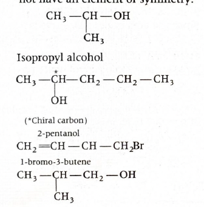
Step-by-step explanation:
Let us test each molecule for a chiral carbon.
(a) Isopropyl alcohol
Structure: \(CH_3-CH(OH)-CH_3\)
The carbon carrying \(-OH\) is attached to:
\(CH_3\)
\(CH_3\)
\(OH\)
\(H\)
Since two groups are identical \((CH_3, CH_3)\), it is
not chiral.
(b) 2-pentanol
Structure: \(CH_3-CH(OH)-CH_2-CH_2-CH_3\)
The second carbon is attached to:
\(CH_3\)
\(CH_2CH_2CH_3\)
\(OH\)
\(H\)
All four groups are different.
Therefore this carbon is chiral, so the molecule is
chiral.
(c) 1-bromo-3-butene
Structure: \(CH_2 = CH-CH_2-CH_2Br\)
No carbon is attached to four different groups.
So it is achiral.
(d) Isobutyl alcohol
Structure: \((CH_3)_2CH-CH_2OH\)
The possible carbon has two identical \(CH_3\) groups.
So it is not chiral.
Concept used / theory behind it:
Chirality usually arises when a tetrahedral carbon is bonded
to four different atoms or groups.
Such a carbon is called an asymmetric or chiral carbon.
If two attached groups are identical, the carbon cannot be
chiral.
Why the correct option is right:
Option (b) is correct because 2-pentanol has one carbon
attached to four different groups.
Why other options are wrong or less suitable:
Isopropyl alcohol has two identical methyl groups.
1-bromo-3-butene has no chiral carbon.
Isobutyl alcohol also lacks a carbon with four different
substituents.
Exam tip / shortcut / elimination clue:
For chirality questions, quickly inspect the carbon attached
to the functional group.
If it has:
two identical groups \(\rightarrow\) achiral
four different groups \(\rightarrow\) chiral
Final result:
The chiral molecule is 2-pentanol.
Chapter / topic / subtopic:
Chapter: Organic Chemistry
Topic: Stereoisomerism
Subtopic: Chirality and asymmetric carbon atom
Correct answer: (d) dry ether
Explanation: Wurtz reaction is carried out with sodium metal and
alkyl halides. The solvent must be aprotic, must not react with
sodium, and should dissolve the alkyl halide well. Dry ether
satisfies all these conditions, so it is the most suitable
solvent.
Since sodium metal is used, the solvent must be chosen
carefully.
The solvent should:
not contain water
not react with sodium
be able to dissolve organic reactants
Dry ether is suitable because:
it is aprotic
it does not react with sodium under reaction conditions
it dissolves alkyl halides well
Dry ethanol is unsuitable because it is protic and reacts
with sodium.
Other listed solvents are not the standard and suitable
medium for Wurtz reaction in this syllabus context.
Concept used / theory behind it:
Wurtz reaction involves sodium metal, so moisture must be
completely absent.
That is why the solvent is specifically dry ether.
Dry ether is a classic reaction medium for
organometallic-type sodium reactions and related coupling
chemistry.
Why the correct option is right:
Option (d) is correct because dry ether is the accepted
solvent for Wurtz reaction and fulfills the required
conditions.
Why other options are wrong or less suitable:
Dry ethanol is wrong because sodium reacts with alcohols.
Dry acetonitrile and dry dichloromethane are not the
standard suitable solvents here.
Exam tip / shortcut / elimination clue:
For Wurtz reaction, memorize the pair together:
sodium metal + dry ether
If ethanol appears among options, eliminate it immediately
because it is protic.
Final result:
The most suitable solvent for Wurtz reaction is dry ether.
Chapter / topic / subtopic:
Chapter: Hydrocarbons
Topic: Alkanes preparation
Subtopic: Wurtz reaction and reaction conditions
Correct answer: (d) \(C_6H_{10}O\)
Explanation: Propyne on hydration with \(HgSO_4\) / dilute
\(H_2SO_4\) gives acetone \((P)\). Acetone, when heated with
\(Ba(OH)_2\), undergoes aldol condensation to form an
\(\alpha,\beta\)-unsaturated ketone. The final product \(Q\) has
molecular formula \(C_6H_{10}O\).
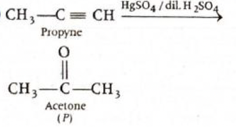
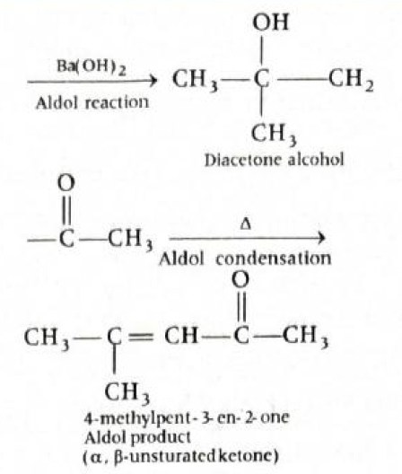
Step-by-step explanation:
Step 1: Hydration of propyne
Propyne is:
\(CH_3-C \equiv CH\)
With \(HgSO_4\) / dilute \(H_2SO_4\), terminal alkynes
undergo Markovnikov hydration.
The enol formed tautomerises to ketone.
So product \(P\) is:
acetone, \(CH_3COCH_3\)
Step 2: Reaction of acetone with \(Ba(OH)_2\)
\(Ba(OH)_2\) acts as a base and promotes aldol reaction.
Two molecules of acetone combine first to form diacetone
alcohol.
On heating, dehydration occurs and an
\(\alpha,\beta\)-unsaturated ketone is formed.
The product is mesityl oxide:
\(CH_3COCH=C(CH_3)_2\)
Now calculate molecular formula of this product:
Number of carbons \(= 6\)
Number of hydrogens \(= 10\)
Number of oxygens \(= 1\)
Therefore:
\(Q = C_6H_{10}O\)
Concept used / theory behind it:
This question combines:
hydration of terminal alkyne
keto-enol tautomerism
aldol condensation of ketone
Terminal alkyne with \(HgSO_4/H_2SO_4\) generally gives a
ketone after tautomerism.
Acetone under basic conditions undergoes self-aldol
condensation, and on heating gives an unsaturated ketone.
Why the correct option is right:
Option (d) is correct because acetone formed in the first
step gives an aldol condensation product having formula
\(C_6H_{10}O\).
Why other options are wrong or less suitable:
\(C_3H_6O\) corresponds to acetone itself, which is only
intermediate \(P\), not final \(Q\).
\(C_3H_8O\) is an alcohol formula, not correct here.
\(C_6H_{12}O_2\) would correspond to the addition product
before dehydration, not the heated condensation product.
Explanation: In the hexagonal crystal system, two axial lengths
are equal and the third is different. Also, two axial angles are
\(90^{\circ}\), while the angle between the two equal axes is
\(120^{\circ}\). Hence the correct relation is \(a=b\neq c\) and
\(\alpha=\beta=90^{\circ}, \gamma=120^{\circ}\).
This is a direct crystal-system identification question.
The seven crystal systems are distinguished by standard
relations among \(a,b,c\) and \(\alpha,\beta,\gamma\).
For hexagonal system, the easiest memory point is:
two equal axes in one plane
one different vertical axis
a \(120^{\circ}\) angle in the basal plane
Why the correct option is right:
Option (c) is correct because it matches the standard
geometrical definition of the hexagonal crystal system
exactly.
Why other options are wrong or less suitable:
Option (a) has incorrect unequal axial relation and angle
relation.
Option (b) gives all angles \(90^{\circ}\), which
corresponds to tetragonal-type relation, not hexagonal.
Option (d) has all unequal axes, which does not fit
hexagonal system.
Exam tip / shortcut / elimination clue:
For hexagonal system, remember this compact rule:
\(a=b\neq c\)
\(\alpha=\beta=90^{\circ},\ \gamma=120^{\circ}\)
The \(120^{\circ}\) clue is usually enough to identify it
immediately.
Final result:
The correct option is \(a = b \neq c,\ \alpha = \beta =
90^{\circ},\ \gamma = 120^{\circ}\).
Chapter / topic / subtopic:
Chapter: Solid State
Topic: Crystal systems
Subtopic: Hexagonal crystal system parameters
Correct answer: (a) 4 only
Explanation: \(CH_3OH\) and \(CH_3COOH\) form a non-ideal
solution. Their unlike intermolecular interactions are different
from like-like interactions, so the solution does not obey
Raoult’s law exactly. Hence statement 2 is correct. The mixture
is not an ideal solution, so statement 4 is the incorrect one.
Step-by-step explanation:
The question asks for the statement that is “not correct.”
Consider the mixture of methanol and acetic acid.
This is not an ideal solution because the intermolecular
forces in the mixture are not exactly the same as those in
the pure components.
So:
it does not obey Raoult’s law exactly
Hence statement 2 is correct.
Since it is not an ideal solution, statement 4:
“An example of ideal solution”
is incorrect.
Therefore the statement that is not correct is:
4 only
Concept used / theory behind it:
Ideal solutions obey Raoult’s law over the entire range of
composition.
For ideal solutions:
\(\Delta H_{mix}=0\)
\(\Delta V_{mix}=0\)
If unlike interactions differ appreciably from like
interactions, the solution becomes non-ideal.
Methanol and acetic acid mixture is treated as non-ideal in
this exam context.
Why the correct option is right:
Option (a) is correct because statement 4 is the not-correct
statement for this mixture.
Why other options are wrong or less suitable:
Option (b) is wrong because it marks both 1 and 3 as not
correct together.
Option (c) is wrong because statement 2 is actually correct.
Option (d) is wrong because it includes statement 3
unnecessarily while the key incorrect statement is 4.
Exam tip / shortcut / elimination clue:
When you see a real liquid mixture like methanol + acetic
acid, be cautious before calling it ideal.
In such questions, the safest elimination is:
“ideal solution” is the likely wrong statement
Final result:
The not-correct statement is 4 only.
Chapter / topic / subtopic:
Chapter: Solutions
Topic: Ideal and non-ideal solutions
Subtopic: Properties of non-ideal liquid mixtures
Correct answer: (c) C and D
Explanation: Henry’s law is applicable only to gases that
dissolve physically in liquids without reacting chemically.
\(O_2\) and \(CO_2\) dissolve in water without such reaction in
the intended exam sense, so they follow Henry’s law. Ammonia
reacts with water, and oxygen in blood binds chemically with
hemoglobin, so those cases do not strictly follow Henry’s law.
Step-by-step explanation:
Henry’s law states:
at constant temperature, solubility of a gas in a liquid
is directly proportional to the partial pressure of that
gas above the liquid
This law is applicable mainly when the gas:
does not react chemically with the solvent
Now examine each case.
(A) Ammonia in water
Ammonia reacts with water to form ammonium
hydroxide-type species.
So Henry’s law is not valid in the simple sense here.
(B) \(O_2\) in unsaturated blood
Oxygen combines with hemoglobin to form oxyhemoglobin.
So this is not simple physical dissolution.
(C) \(O_2\) in water
This is a physical dissolution case.
So Henry’s law is valid.
(D) \(CO_2\) in water
In this exam treatment, it is considered under Henry’s
law applicability as a dissolved gas in water.
So it is taken as valid here.
Hence the correct pair is:
C and D
Concept used / theory behind it:
Henry’s law is used for non-reacting gas-liquid systems.
If the gas reacts with the solvent or a component of the
solution, the law is not directly applicable.
This is why chemically reacting cases are excluded.
Why the correct option is right:
Option (c) is correct because \(O_2\) in water and \(CO_2\)
in water are the relevant non-reactive dissolution cases
considered valid for Henry’s law in this problem.
Why other options are wrong or less suitable:
Option (a) is wrong because ammonia reacts with water.
Option (b) is wrong because oxygen in blood is not just
physically dissolved; it binds with hemoglobin.
Option (d) is wrong because it incorrectly includes oxygen
in blood.
Exam tip / shortcut / elimination clue:
For Henry’s law, eliminate cases where:
the gas reacts with the solvent
the gas binds chemically to something in the solution
That quickly removes ammonia in water and oxygen in blood.
Final result:
Henry’s law is valid for C and D.
Chapter / topic / subtopic:
Chapter: Solutions
Topic: Solubility of gases in liquids
Subtopic: Henry’s law and its limitations
Correct answer: (b) \(31.75\)
Explanation: First calculate the total charge passed using \(Q =
It\). Then find the number of faradays or moles of electrons
passed. Equivalent weight is the mass deposited by one mole of
electrons \((1\) faraday\().\) Using the given data, the
equivalent weight of copper comes out to be \(31.75\ \text{g}\).
Step-by-step explanation:
Given:
Current, \(I = 1.2\ \text{A}\)
Time, \(t = 40\ \text{min} = 2400\ \text{s}\)
Mass of copper deposited \(= 0.96\ \text{g}\)
Calculate total charge passed:
\(Q = It = 1.2 \times 2400 = 2880\ \text{C}\)
Now calculate moles of electrons passed:
\(\text{moles of electrons} = \dfrac{Q}{F} =
\dfrac{2880}{96500}\)
\(\approx 2.98 \times 10^{-2}\)
Equivalent weight is:
\(\text{Equivalent weight} = \dfrac{\text{mass
deposited}}{\text{moles of electrons}}\)
This question is based on Faraday’s laws of electrolysis.
One faraday \((96500\ \text{C})\) deposits one gram
equivalent of a substance.
So if you know:
charge passed
mass deposited
you can directly calculate equivalent weight.
Why the correct option is right:
Option (b) is correct because using the passed charge and
deposited mass gives equivalent weight \(31.75\ \text{g}\).
Why other options are wrong or less suitable:
\(21.2\), \(63.5\), and \(15.9\) do not fit the Faraday-law
calculation from the given data.
\(63.5\) is the atomic mass of copper, not the equivalent
weight in this deposition context.
Exam tip / shortcut / elimination clue:
For electrolysis numericals:
first find \(Q = It\)
then convert to faradays by dividing by \(96500\)
then use mass deposited per faraday = equivalent weight
Final result:
The equivalent weight of copper is \(31.75\ \text{g}\).
Chapter / topic / subtopic:
Chapter: Electrochemistry
Topic: Faraday’s laws of electrolysis
Subtopic: Equivalent weight from electrolysis data
Correct answer: (b) 2
Explanation: We compare how half-life changes when the initial
concentration changes. For zero, first, and second order
reactions, half-life behaves differently. Here, when
concentration becomes 10 times smaller, the half-life becomes 10
times larger. That pattern matches a second order reaction.
Step-by-step explanation:
Given:
\((t_{1/2})_1 = 5\) min at \(a_1 = 0.1\ \text{M}\)
\((t_{1/2})_2 = 50\) min at \(a_2 = 0.01\ \text{M}\)
For an \(n\)-th order reaction, half-life depends on initial
concentration as:
Half-life formulas are very useful for identifying reaction
order.
Important standard results:
Zero order: \(t_{1/2} \propto a\)
First order: \(t_{1/2} = \dfrac{0.693}{k}\), so it is
independent of initial concentration
Second order: \(t_{1/2} = \dfrac{1}{ka}\), so it is
inversely proportional to initial concentration
In this question, concentration decreases from \(0.1\) to
\(0.01\), that is, it becomes \(\dfrac{1}{10}\) times.
At the same time, half-life increases from \(5\) to \(50\),
that is, it becomes \(10\) times.
This inverse relation is the signature of a second order
reaction.
Why the correct option is right:
Only for a second order reaction does half-life increase
when initial concentration decreases, exactly in the inverse
manner seen here.
Why other options are wrong:
(a) 3: For third order, half-life would have a stronger
dependence, not the simple inverse pattern seen here.
(c) 1: For first order, half-life does not change with
initial concentration. But here it changes from 5 min to 50
min.
(d) 0: For zero order, half-life is directly proportional to
initial concentration, so decreasing concentration would
decrease half-life, not increase it.
Exam tip / shortcut / elimination clue:
Memorize this quick pattern:
If half-life is constant, first order
If half-life decreases with concentration, zero order
If half-life increases when concentration decreases,
second order
That alone is enough to eliminate three options very fast.
Final result:
The reaction is of second order.
Hence, the correct option is (b) 2.
Chapter / topic / subtopic:
Chapter: Chemical Kinetics
Topic: Order of reaction
Subtopic: Half-life method for identifying reaction order
Correct answer: (a) HCl (l), Pt (s), NO (g) and Fe (s)
Explanation: This is a direct memory-based catalysts question.
Each reaction has a standard catalyst commonly taught in
NCERT-level chemistry and industrial chemistry. Matching them
correctly gives option (a).
Ester hydrolysis is catalysed by mineral acids such as
HCl.
(II) Conversion of \(\mathrm{SO_2}\) to \(\mathrm{SO_3}\)
In the manufacture of sulphuric acid, this oxidation is
catalysed by platinum, \(\mathrm{Pt}\).
(III) \(\mathrm{2SO_2 + O_2 \rightarrow 2SO_3}\)
In the lead chamber process, nitric oxide,
\(\mathrm{NO}\), acts as the catalyst.
(IV) \(\mathrm{N_2 + 3H_2 \rightarrow 2NH_3}\)
This is the Haber process.
The catalyst used is iron, \(\mathrm{Fe}\).
So the correct sequence is:
HCl, Pt, NO, Fe
Concept used / theory behind it:
A catalyst increases the rate of reaction by providing a
lower energy pathway, but it does not get permanently
consumed.
Many questions in inorganic and physical chemistry test
standard industrial catalysts.
The reactions here come from commonly repeated exam facts:
Ester hydrolysis: acid catalysed
\(\mathrm{SO_2 \rightarrow SO_3}\): Pt in contact
process context
Lead chamber process: NO as catalyst
Haber process: Fe catalyst
Why the correct option is right:
Option (a) alone matches all four standard catalysts
correctly and in the proper order.
Why other options are wrong:
(b) swaps Pt and NO for reactions (II) and (III), so the
middle two are incorrect.
(c) gives Ni for reaction (II), but Ni is not the standard
catalyst here.
(d) gives \(N_2O\) for reaction (III), which is not the
catalyst used in that process.
Exam tip / shortcut / elimination clue:
Memorize these industrial pairs:
Haber process \(\rightarrow\) Fe
Lead chamber process \(\rightarrow\) NO
Ester hydrolysis \(\rightarrow\) acid catalyst
\(\mathrm{SO_2}\) oxidation in sulphuric acid
manufacture \(\rightarrow\) Pt
Usually one wrong catalyst in the sequence is enough to
reject an option quickly.
Final result:
The catalysts are HCl, Pt, NO and Fe.
Hence, the correct option is (a).
Chapter / topic / subtopic:
Chapter: General Principles and Processes of Isolation of
Elements / Surface Chemistry / s-Block and p-Block applied
industrial facts
Topic: Catalysts in important reactions
Subtopic: Standard industrial and reaction-specific
catalysts
Correct answer: (c) 2
Explanation: We must count only those products which are both
gaseous and paramagnetic. So this is a two-step filter question:
first identify the gaseous products, then check which of them
have unpaired electrons.
Explanation: In a disproportionation reaction, the same element
present in one oxidation state gets oxidised and reduced at the
same time. So we first find the oxidation state of selenium in
\(\mathrm{Se_2Cl_2}\), then look for one product where selenium
has a higher oxidation state and another where selenium has a
lower oxidation state.
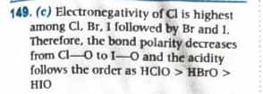
Step-by-step explanation:
Find oxidation state of Se in \(\mathrm{Se_2Cl_2}\):
Let oxidation state of each Se be \(x\).
Then \(2x + 2(-1) = 0\)
\(2x - 2 = 0\)
\(2x = 2\)
\(x = +1\)
So selenium is in \(+1\) oxidation state in
\(\mathrm{Se_2Cl_2}\).
In disproportionation, one part of Se must be oxidised to a
higher oxidation state and another part must be reduced to a
lower oxidation state.
Check the products in option (c):
In \(\mathrm{SeCl_4}\), Se is \(+4\)
In elemental \(\mathrm{Se}\), oxidation state is \(0\)
So from \(+1\):
\(+1 \rightarrow +4\) means oxidation
\(+1 \rightarrow 0\) means reduction
This perfectly matches disproportionation.
The balanced reaction is:
\(\mathrm{2Se_2Cl_2 \rightarrow SeCl_4 + 3Se}\)
Concept used / theory behind it:
Disproportionation means the same species acts as both
reducing agent and oxidising agent.
One atom of the same element goes to a higher oxidation
state, while another atom of that same element goes to a
lower oxidation state.
This is why oxidation state analysis is the fastest method
for solving such questions.
Why the correct option is right:
\(\mathrm{Se_2Cl_2}\) has selenium in \(+1\) state.
\(\mathrm{SeCl_4}\) has selenium in \(+4\) state, showing
oxidation.
\(\mathrm{Se}\) has selenium in \(0\) state, showing
reduction.
Thus, \(\mathrm{SeCl_4}\) and \(\mathrm{Se}\) are the two
main disproportionation products.
Why other options are wrong:
(a) \(\mathrm{SeCl_2}\) and \(\mathrm{SeCl_3}\) do not give
the standard disproportionation pair expected here, and
\(\mathrm{SeCl_3}\) is not the suitable stable product in
this context.
(b) \(\mathrm{SeCl_4}\) and \(\mathrm{SeCl_2}\) do not
represent oxidation and reduction from \(+1\) in the
required way.
(d) \(\mathrm{Se_2}\) is not the proper reduced product
expected here; elemental selenium is \(\mathrm{Se}\).
Exam tip / shortcut / elimination clue:
For disproportionation questions, do not start by balancing.
First find the oxidation state of the central element in the
reactant.
Then look for one product with higher oxidation state and
one with lower oxidation state.
That usually gives the answer in seconds.
Final result:
The main products are \(\mathrm{SeCl_4}\) and
\(\mathrm{Se}\).
Hence, the correct option is (c).
Chapter / topic / subtopic:
Chapter: Redox Reactions / p-Block Elements
Topic: Disproportionation reaction
Subtopic: Oxidation state method for identifying products
Correct answer: (c) HClO > HBrO > HIO
Explanation: For oxyacids of the same type, acidity depends
mainly on how strongly the central atom pulls electron density
away from the O-H bond. The more electronegative the central
atom, the more polar the O-H bond becomes, and the more easily
\(H^+\) is released. Since electronegativity decreases as \(Cl
> Br > I\), the acidity order is \(HClO > HBrO >
HIO\).
Step-by-step explanation:
All three given acids are of the same general form:
\(\mathrm{HOX}\), where \(X = Cl, Br, I\)
When oxyacids have the same number of oxygen atoms, their
acidity is compared by the electronegativity of the central
atom.
The central atom pulls electron density through the oxygen
atom.
If the central atom is more electronegative, it pulls
electrons more strongly, which weakens the O-H bond.
A weaker O-H bond means hydrogen is released more easily as
\(H^+\).
Now compare the halogens:
\(Cl\) is more electronegative than \(Br\)
\(Br\) is more electronegative than \(I\)
So the acidity follows:
\(\mathrm{HClO > HBrO > HIO}\)
Concept used / theory behind it:
For oxyacids, two major comparison rules are used:
If the central atom is the same, more oxygen atoms
usually mean stronger acid.
If the number of oxygen atoms is the same, higher
electronegativity of the central atom means stronger
acid.
Here, all three acids have one oxygen atom, so the second
rule applies.
This is an inductive effect based idea. A more
electronegative atom pulls electron density away and helps
the acid lose proton more easily.
Why the correct option is right:
Option (c) correctly follows the electronegativity order:
\(Cl > Br > I\)
Hence the acid strength is:
\(\mathrm{HClO > HBrO > HIO}\)
Why other options are wrong:
(a), (b), and (d) place \(HIO\) or \(HBrO\) above \(HClO\),
which is incorrect because iodine is the least
electronegative among the three and chlorine is the most
electronegative.
So any order that does not keep \(HClO\) as the strongest
and \(HIO\) as the weakest must be rejected.
Exam tip / shortcut / elimination clue:
For acids like \(HOCl\), \(HOBr\), \(HOI\), remember:
same oxygen count \(\rightarrow\) compare
electronegativity of the attached atom
Among halogens:
\(Cl > Br > I\)
So acidity also goes:
\(HOCl > HOBr > HOI\)
Final result:
The correct acidity order is \(\mathrm{HClO > HBrO >
HIO}\).
Hence, the correct option is (c).
Chapter / topic / subtopic:
Chapter: Chemical Bonding / Hydrogen and p-Block acid trends
Topic: Acidity of oxyacids
Subtopic: Effect of electronegativity on acid strength
Correct answer: (d) \(\mathrm{XeF_2}\)
Explanation: To identify the linear molecule, we use VSEPR
theory. \(\mathrm{XeF_2}\) has five electron pairs around xenon,
out of which three are lone pairs and two are bond pairs. This
arrangement gives a linear molecular shape. The others are bent
or angular.
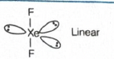
Step-by-step explanation:
Let us inspect each option using shape and lone pair logic.
\(\mathrm{SnCl_2}\):
Tin has a lone pair along with two bond pairs.
So the shape is bent or angular, not linear.
\(\mathrm{PbCl_2}\):
Lead also has a lone pair effect in this molecule.
Hence it is bent or V-shaped, not linear.
\(\mathrm{SO_2}\):
Sulphur has one lone pair in the usual VSEPR picture.
Therefore \(\mathrm{SO_2}\) is bent, not linear.
\(\mathrm{XeF_2}\):
Xenon has 8 valence electrons.
It forms two bonds with two fluorine atoms.
That leaves three lone pairs on xenon.
So the steric number is 5, corresponding to trigonal
bipyramidal electron pair arrangement.
In this arrangement, the three lone pairs occupy
equatorial positions to minimize repulsion.
The two bond pairs occupy opposite axial positions.
Therefore the molecular shape becomes linear.
Concept used / theory behind it:
VSEPR theory says electron pairs arrange themselves to
minimize repulsion.
There is a difference between:
electron pair geometry
molecular shape
For \(\mathrm{XeF_2}\):
\(AX_2E_3\)
electron pair geometry = trigonal bipyramidal
molecular shape = linear
This is a classic exam favorite among shapes of xenon
compounds.
Why the correct option is right:
\(\mathrm{XeF_2}\) alone has an arrangement where lone pairs
occupy equatorial positions and bonded atoms stay opposite
to each other, giving a \(180^\circ\) bond angle.
That makes it linear.
Why other options are wrong:
\(\mathrm{SnCl_2}\) is bent due to a lone pair on Sn.
\(\mathrm{PbCl_2}\) is bent or V-shaped for the same general
reason.
\(\mathrm{SO_2}\) is bent because sulphur has lone pair-bond
pair repulsion.
Exam tip / shortcut / elimination clue:
Memorize a few standard xenon compound shapes:
\(\mathrm{XeF_2}\) linear
\(\mathrm{XeF_4}\) square planar
\(\mathrm{XeF_6}\) distorted octahedral
If \(\mathrm{XeF_2}\) appears in options with common bent
molecules, it is usually the linear one.
Final result:
The linear molecule is \(\mathrm{XeF_2}\).
Hence, the correct option is (d).
Chapter / topic / subtopic:
Chapter: Chemical Bonding and Molecular Structure
Topic: VSEPR theory and molecular shapes
Subtopic: Shape of xenon fluorides and bent molecules
Correct answer: (a) (A) is true, (R) is true and (R) is the
correct explanation for (A)
Explanation: Transition metals generally have high melting
points because metallic bonding in them is strong. This strong
metallic bonding arises because more electrons, especially from
\((n-1)d\) and \(ns\) orbitals, participate in interatomic
bonding. So both the assertion and reason are true, and the
reason correctly explains the assertion.
Step-by-step explanation:
First examine the assertion:
Transition metals usually have high melting points.
This statement is generally true.
Now examine the reason:
In transition metals, electrons from both \((n-1)d\) and
\(ns\) orbitals can take part in metallic bonding.
Because more electrons are available for delocalisation,
metallic bonding becomes stronger.
Stronger metallic bonding means:
atoms are held together more strongly
more heat energy is needed to separate them
hence melting point becomes high
Therefore:
Assertion is true
Reason is also true
Reason correctly explains the assertion
Concept used / theory behind it:
Metallic bond strength depends on how effectively valence
electrons are delocalised through the metal lattice.
In many transition metals, both \(ns\) and \((n-1)d\)
electrons contribute to bonding.
That is why transition metals often show:
high melting points
high boiling points
high enthalpy of atomisation
good hardness and strength
There are some exceptions, but the statement says “in
general,” so the trend is correct.
Why the correct option is right:
Option (a) is correct because the reason directly gives the
cause of the high melting points.
This is not just an unrelated true statement. It is the
actual explanation.
Why other options are wrong:
(b) is wrong because the reason is not separate from the
assertion; it explains it directly.
(c) is wrong because the reason is not false.
(d) is wrong because the assertion is not false; transition
metals do generally have high melting points.
Exam tip / shortcut / elimination clue:
For assertion-reason questions, always check in this order:
Is the assertion true?
Is the reason true?
Does the reason actually explain the assertion?
Here the keyword “more electrons involved in metallic
bonding” directly points to stronger bonding and higher
melting point, so choose option (a).
Final result:
Both A and R are true, and R is the correct explanation of
A.
Hence, the correct option is (a).
Chapter / topic / subtopic:
Chapter: d- and f-Block Elements
Topic: Physical properties of transition metals
Subtopic: High melting points and metallic bonding
Correct answer: (c) I, II and IV
Explanation: We must identify which metal carbonyl complexes
contain bridging carbon monoxide ligands, that is, carbonyl
groups attached to more than one metal atom. From the standard
structures of these complexes, \(\mathrm{[Co_2(CO)_8]}\),
\(\mathrm{[Fe_3(CO)_{12}]}\), and \(\mathrm{[Fe_2(CO)_9]}\)
contain bridged CO ligands, whereas \(\mathrm{[Mn_2(CO)_{10}]}\)
does not.
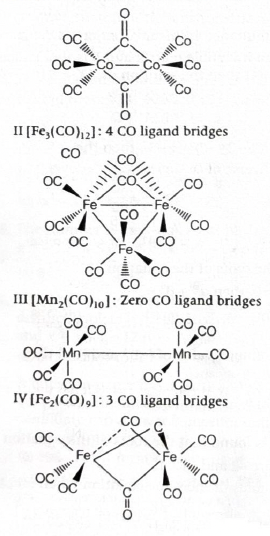
Step-by-step explanation:
Let us check each complex one by one.
I. \(\mathrm{[Co_2(CO)_8]}\)
This complex contains bridged carbonyl ligands.
The usual structure includes 2 bridged CO ligands.
So I is included.
II. \(\mathrm{[Fe_3(CO)_{12}]}\)
This complex also contains bridged carbonyl ligands.
The commonly accepted structure includes 4 bridged CO
ligands.
So II is included.
III. \(\mathrm{[Mn_2(CO)_{10}]}\)
This complex has no bridged CO ligands.
It contains terminal carbonyls only.
So III is not included.
IV. \(\mathrm{[Fe_2(CO)_9]}\)
This complex contains bridged carbonyl ligands.
It has 3 bridged CO ligands.
So IV is included.
Hence the correct set is:
I, II and IV
Concept used / theory behind it:
In metal carbonyl chemistry, CO may behave as:
a terminal ligand, attached to only one metal atom
a bridging ligand, attached to two or more metal atoms
A bridged ligand is often denoted by \(\mu\)-CO in
structural descriptions.
Questions like this are memory-plus-structure questions.
They test whether you know standard structures of important
metal carbonyls.
Why the correct option is right:
Only I, II and IV have bridged CO ligands in their standard
structures.
\(\mathrm{[Mn_2(CO)_{10}]}\) does not have bridged
carbonyls, so any option containing III must be rejected.
Why other options are wrong:
(a) I, II and III is wrong because III does not contain
bridged CO.
(b) II, III and IV is wrong because III is wrongly included
and I is wrongly excluded.
(d) I, III and IV is wrong because III is wrongly included
and II is wrongly excluded.
Exam tip / shortcut / elimination clue:
Memorize the most commonly tested examples:
\(\mathrm{[Mn_2(CO)_{10}]}\) has no bridged CO
\(\mathrm{[Fe_2(CO)_9]}\) has bridged CO
\(\mathrm{[Co_2(CO)_8]}\) has bridged CO
In this question, spotting that III is the odd one out is
enough to reach the correct answer quickly.
Final result:
The complexes possessing CO as bridged ligands are I, II and
IV.
Explanation: On acid hydrolysis, 1 mole of sucrose gives 1 mole
of glucose and 1 mole of fructose. So, to produce 1 mole of
glucose, we need exactly 1 mole of sucrose. The molar mass of
sucrose is 342 g mol\(^{-1}\). Hence, the required amount is 342
g.
Sucrose is a disaccharide made of one glucose unit and one
fructose unit.
On hydrolysis, the glycosidic bond breaks and yields exactly
one molecule of each monosaccharide.
So this is a simple stoichiometry plus molar mass question.
Why the correct option is right:
Because 1 mole of sucrose gives 1 mole of glucose, and 1
mole of sucrose weighs 342 g.
Why other options are wrong:
(a) 360 g is not the molar mass of sucrose.
(b) 180 g is the molar mass of glucose, not sucrose.
(d) 171 g is half of 342 g, but half mole sucrose would give
only half mole glucose.
Exam tip / shortcut / elimination clue:
Always remember:
sucrose \(\rightarrow\) glucose + fructose
1 mole sucrose gives 1 mole glucose
If the question asks amount of sucrose for 1 mole glucose,
think directly: one mole sucrose required.
Final result:
The amount of sucrose needed is 342 g.
Hence, the correct option is (c).
Chapter / topic / subtopic:
Chapter: Biomolecules
Topic: Carbohydrates
Subtopic: Hydrolysis of disaccharides and stoichiometry
Correct answer: (d) I < III < II < IV
Explanation: \(S_N1\) reactions proceed through carbocation
formation, so the order of reactivity follows carbocation
stability. Tertiary carbocations are most stable, then
secondary, then primary. Among the two primary cases here, the
isobutyl-derived carbocation is relatively more stabilized than
the n-butyl-derived carbocation. Hence the order is I < III
< II < IV.
Step-by-step explanation:
In an \(S_N1\) reaction, the slow step is:
breaking of the C-Br bond
formation of a carbocation
So higher the carbocation stability, faster the \(S_N1\)
reaction.
Now identify the type of carbocation formed by each
compound.
I. \(\mathrm{CH_3CH_2CH_2CH_2Br}\)
This gives an \(n\)-butyl carbocation.
It is a primary carbocation.
So it is the least stable among these.
III. \(\mathrm{(CH_3)_2CHCH_2Br}\)
This also gives a primary carbocation initially.
But due to greater alkyl electron-releasing effect from
branching nearby, it is considered more stable than the
simple \(n\)-butyl primary carbocation in this
comparison.
II. \(\mathrm{CH_3CH_2CHBrCH_3}\)
This forms a secondary carbocation.
Secondary carbocations are more stable than primary
carbocations.
IV. \(\mathrm{(CH_3)_3CBr}\)
This forms a tertiary carbocation.
Tertiary carbocations are the most stable here.
Therefore the reactivity order is:
I < III < II < IV
Concept used / theory behind it:
\(S_N1\) stands for unimolecular nucleophilic substitution.
The rate law is:
\(\text{Rate} = k(\text{alkyl halide})\)
It does not directly depend on nucleophile concentration in
the rate-determining step.
The key idea is carbocation stability:
\(3^\circ > 2^\circ > 1^\circ\)
More alkyl groups stabilize carbocations through \(+I\)
effect and hyperconjugation.
That matches the increasing ease of carbocation formation.
Why other options are wrong:
(a) places IV too early, but tertiary halide should be the
most reactive in \(S_N1\).
(b) starts with IV as least reactive, which is opposite to
\(S_N1\) logic.
(c) incorrectly places III as less reactive than II and I in
a wrong pattern.
Exam tip / shortcut / elimination clue:
For \(S_N1\), do not focus first on nucleophile.
Ask only one question:
Which carbocation is formed most easily?
Then apply:
\(3^\circ > 2^\circ > 1^\circ\)
That immediately places IV last in the increasing order and
helps eliminate wrong options.
Final result:
The correct order of reactivity is
I < III < II < IV.
Hence, the correct option is (d).
Chapter / topic / subtopic:
Chapter: Haloalkanes and Haloarenes
Topic: Nucleophilic substitution reactions
Subtopic: \(S_N1\) mechanism and carbocation stability
Correct answer: (b)
Explanation: The starting compound is salicylic acid, that is,
\(o\)-hydroxy benzoic acid. With soda lime it undergoes
decarboxylation to give phenol. Phenol on heating with zinc dust
gives benzene. Salicylic acid with bromine water undergoes
bromination at positions activated by the \(-OH\) group to give
3,5-dibromosalicylic acid. On heating around
\(200{-}230^\circ\text{C}\), salicylic acid decarboxylates to
phenol. So the set in option (b) is correct.
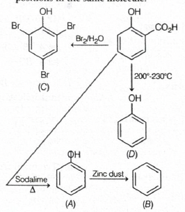
Step-by-step explanation:
The starting compound shown is salicylic acid:
\(o\)-hydroxy benzoic acid
Reaction towards \([A]\): soda lime, \(\Delta\)
Soda lime causes decarboxylation of aromatic carboxylic
acids.
So the \(-COOH\) group is removed.
Salicylic acid therefore gives phenol.
Hence, \([A] =\) phenol.
Reaction from \([A]\) to \([B]\): zinc dust
Phenol on distillation with zinc dust loses oxygen
functionality.
It is converted into benzene.
Hence, \([B] =\) benzene.
Reaction towards \([C]\): \(\mathrm{Br_2/H_2O}\)
The \(-OH\) group strongly activates the benzene ring
and directs substitution to ortho and para positions.
But one ortho position already contains \(-COOH\).
The \(-COOH\) group is deactivating and meta-directing.
The positions that become most suitable are 3 and 5
relative to the given structure.
So bromination gives 3,5-dibromosalicylic acid.
Hence, \([C] =\) 3,5-dibromosalicylic acid.
Reaction towards \([D]\): \(200{-}230^\circ\text{C}\)
Salicylic acid undergoes decarboxylation on heating in
this range.
So the product again is phenol.
Hence, \([D] =\) phenol.
Therefore:
\([A] =\) phenol
\([B] =\) benzene
\([C] =\) 3,5-dibromosalicylic acid
\([D] =\) phenol
Concept used / theory behind it:
This question combines several standard reactions of phenols
and aromatic carboxylic acids:
decarboxylation by soda lime
reduction of phenol to benzene by zinc dust
electrophilic bromination of activated aromatic rings
thermal decarboxylation of salicylic acid
Salicylic acid is a very common exam compound because it
contains both:
an activating \(-OH\) group
a deactivating \(-COOH\) group
So orientation of substitution becomes a good test of
directing effects.
Why the correct option is right:
Option (b) correctly matches all four products from the
given reaction conditions.
Every transformation in that option follows standard organic
chemistry reactions.
Why other options are wrong:
(a) is wrong because \([C]\) is not 2,4,6-tribromophenol.
The starting compound is salicylic acid, not plain phenol.
(c) is wrong because \([D]\) is not the alternative ring
structure shown there; heating salicylic acid gives phenol.
(d) is wrong because \([A]\) and \([B]\) are incorrectly
assigned. Soda lime gives phenol, and zinc dust converts
phenol to benzene.
Exam tip / shortcut / elimination clue:
Memorize these standard pairs:
aromatic \(-COOH\) + soda lime \(\rightarrow\) ring
minus \(-COOH\)
phenol + zinc dust \(\rightarrow\) benzene
phenolic ring + bromine water \(\rightarrow\) easy
bromination
If the starting compound already has \(-COOH\), do not jump
to tribromophenol directly.
Final result:
The correct set is:
\([A] =\) phenol
\([B] =\) benzene
\([C] =\) 3,5-dibromosalicylic acid
\([D] =\) phenol
Hence, the correct option is (b).
Chapter / topic / subtopic:
Chapter: Alcohols, Phenols and Ethers / Aromatic carboxylic
acid reactions
Topic: Reactions of phenol and salicylic acid
Subtopic: Decarboxylation, bromination and zinc dust
reduction
Correct answer: (d) A and C
Explanation: Statement (A) is true because phenol is more acidic
than alcohol due to resonance stabilization of phenoxide ion.
Statement (C) is also true because phenol gives a violet colour
with neutral ferric chloride. Statement (B) is false because
phenol is used in bakelite, not melamine plastic. Statement (D)
is false because phenol reacts with acetyl chloride to form
phenyl ethanoate, not phenetole.
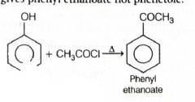
Step-by-step explanation:
Let us check each statement one by one.
(A) In general, phenol is more acidic than alcohol.
This is true.
When phenol loses \(H^+\), it forms phenoxide ion.
The negative charge on phenoxide ion is stabilized by
resonance over the aromatic ring.
Ordinary alkoxide ions from alcohols do not get this
kind of resonance stabilization.
So phenol is more acidic than alcohol.
(B) Phenol is used in the production of melamine plastic.
This is false.
Phenol is used for making bakelite, which is a
phenol-formaldehyde resin.
Melamine plastic is based on melamine-formaldehyde, not
phenol.
(C) Phenol gives violet colour with neutral ferric chloride
solution.
This is true.
Phenols give characteristic coloured complexes with
neutral \(\mathrm{FeCl_3}\).
For phenol, the colour is violet.
(D) Phenol when heated with acetyl chloride gives phenetole.
This is false.
Phenol reacts with acetyl chloride by acylation, not by
ethylation.
Phenetole is ethoxybenzene, which is a different
compound.
Hence the correct statements are A and C only.
Concept used / theory behind it:
This question mixes physical property, qualitative test,
industrial use, and reaction chemistry of phenol.
Important facts about phenol:
more acidic than alcohol due to resonance stabilization
gives violet colour with neutral \(\mathrm{FeCl_3}\)
used in phenol-formaldehyde resin, that is bakelite
undergoes acylation to form esters such as phenyl
ethanoate
Why the correct option is right:
Only option (d) contains the two correct statements, A and
C.
Why other options are wrong:
(a) C and D is wrong because D is false.
(b) A and D is wrong because D is false.
(c) B and C is wrong because B is false.
Exam tip / shortcut / elimination clue:
Memorize this quick phenol set:
phenol \(>\) alcohol in acidity
neutral \(\mathrm{FeCl_3}\) test gives violet colour
phenol + formaldehyde \(\rightarrow\) bakelite
phenol + acetyl chloride \(\rightarrow\) ester, not
ether
That is enough to solve this whole question in under a
minute.
Final result:
The correct statements are A and C.
Hence, the correct option is (d).
Chapter / topic / subtopic:
Chapter: Alcohols, Phenols and Ethers
Topic: Properties and reactions of phenol
Subtopic: Acidity, ferric chloride test, uses and acylation
Correct answer: (d)
Explanation: Dialkyl cadmium reagents are mild organometallic
reagents. They react with acid chlorides to give ketones, but
they do not usually attack the ketone further like very reactive
Grignard reagents do. So only the acid chloride group is
converted, while the already present ketone group remains
unchanged.
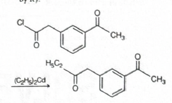
Step-by-step explanation:
The given compound contains two important carbonyl
functionalities:
one acid chloride group \((\mathrm{-COCl})\)
one ketone group \((\mathrm{-COCH_3})\)
The reagent used is \(\mathrm{(C_2H_5)_2Cd}\), that is
dialkyl cadmium.
Dialkyl cadmium is known for one very specific reaction:
\(\mathrm{RCOCl \rightarrow RCOR'}\)
So here, the chlorine of the acid chloride is replaced by an
ethyl group.
That means the left-side \(\mathrm{-COCl}\) becomes
\(\mathrm{-COC_2H_5}\).
The ketone already present on the right side does not get
converted into alcohol under these conditions.
Therefore, the product is the compound where:
acid chloride has changed into ketone
the original ketone remains unchanged
This matches option (d).
Concept used / theory behind it:
Organometallic reagents behave differently depending on
their reactivity.
Very reactive reagents like Grignard reagents often add
twice to acid chlorides, finally giving tertiary alcohols
after hydrolysis.
But dialkyl cadmium is much milder.
It stops at the ketone stage.
This makes it a standard reagent for converting acid
chlorides selectively into ketones.
Why the correct option is right:
Option (d) alone shows replacement of \(\mathrm{Cl}\) in the
acid chloride by \(\mathrm{C_2H_5}\), producing a ketone.
It also correctly leaves the other ketone group untouched.
Why other options are wrong:
(a) and (b) show over-addition to carbonyl groups to form
alcohols, which is not the characteristic behaviour of
dialkyl cadmium here.
(c) changes the acid chloride side too far while leaving the
wrong functionality pattern.
These are more like outcomes expected with stronger
organometallic reagents, not \(\mathrm{R_2Cd}\).
If you see alcohol formation in the options, be cautious.
That usually suggests over-addition, which dialkyl cadmium
generally does not do.
Final result:
The major product is the ketone formed by replacing
\(\mathrm{Cl}\) of the acid chloride with
\(\mathrm{C_2H_5}\).
Hence, the correct option is (d).
Chapter / topic / subtopic:
Chapter: Aldehydes, Ketones and Carboxylic Acids
Topic: Reactions of acid chlorides
Subtopic: Selective preparation of ketones using
organocadmium reagents
Correct answer: (a)
Explanation: The reagent sequence \((i)\ \mathrm{NH_2NH_2}\) and
\((ii)\ \mathrm{KOH,\ ethylene\ glycol,\ \Delta}\) is the
Wolff-Kishner reduction. It reduces the carbonyl group
\((\mathrm{C=O})\) of a ketone to a methylene group
\((\mathrm{-CH_2-})\). So the cyclic ketone becomes the
corresponding cycloalkane derivative, giving option (a).
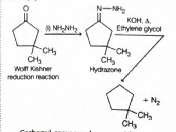
Step-by-step explanation:
The starting compound is a cyclopentanone derivative with
two methyl groups on the same ring carbon.
Step 1: Reaction with hydrazine \((\mathrm{NH_2NH_2})\)
The ketone first forms a hydrazone.
Step 2: Heating with \(\mathrm{KOH}\) in ethylene glycol
This is the Wolff-Kishner reduction condition.
The hydrazone loses nitrogen and finally the carbonyl
carbon becomes \(\mathrm{CH_2}\).
So:
\(\mathrm{C=O}\) of the cyclopentanone is reduced to
\(\mathrm{CH_2}\)
the ring remains intact
the two methyl groups remain where they are
Therefore the product is dimethyl-substituted cyclopentane
shown in option (a).
Concept used / theory behind it:
Wolff-Kishner reduction is a standard method to reduce:
aldehydes \(\rightarrow\) alkanes
ketones \(\rightarrow\) alkanes
It proceeds through hydrazone formation and then removal of
nitrogen under strongly basic high-temperature conditions.
It is essentially the opposite functional idea of oxidation
of alcohol to carbonyl, but here we go all the way from
carbonyl to hydrocarbon.
Why the correct option is right:
Option (a) correctly shows complete reduction of the ketone
carbonyl into a methylene group without changing the ring
framework or the methyl substituents.
Why other options are wrong:
(b) shows an alkene, but Wolff-Kishner reduction does not
create a double bond here.
(c) shows an alcohol, but these reagents do not reduce
ketone to alcohol.
(d) shows a dimeric diol-type product, which is unrelated to
Wolff-Kishner conditions.
Exam tip / shortcut / elimination clue:
Whenever you see:
\(\mathrm{NH_2NH_2}\), then \(\mathrm{KOH}\), heat
immediately think:
Wolff-Kishner reduction
\(\mathrm{C=O \rightarrow CH_2}\)
So eliminate alcohol and alkene options first.
Final result:
The major product is the reduced cycloalkane shown in
option (a).
Chapter / topic / subtopic:
Chapter: Aldehydes, Ketones and Carboxylic Acids
Topic: Reduction of carbonyl compounds
Subtopic: Wolff-Kishner reduction
Correct answer: (c) butanoic acid
Explanation: \(n\)-Propanol first converts into \(n\)-propyl
bromide with concentrated HBr. Then KCN substitutes bromine to
form a nitrile, which adds one extra carbon atom. Finally,
acidic hydrolysis of the nitrile gives the corresponding
carboxylic acid. So the final product is butanoic acid.
Step-by-step explanation:
Step 1: \(n\)-propanol with concentrated HBr
Alcohols react with hydrogen halides to form alkyl
halides.
Starting from 3-carbon \(n\)-propanol, the nitrile step
gives a 4-carbon compound, and hydrolysis converts it into
the 4-carbon acid, that is butanoic acid.
Why other options are wrong:
(a) propanoic acid would have no carbon chain increase, so
it is wrong.
(b) propanamide is neither the correct chain length nor the
final acidic hydrolysis product here.
(d) butanamide can appear as an intermediate idea during
controlled hydrolysis, but final heating with aqueous acidic
solution gives the acid, not the amide.
Chapter: Haloalkanes and Haloarenes / Organic conversions
Topic: Cyanide substitution and hydrolysis
Subtopic: One-carbon chain extension using KCN
Correct answer: (d)
Explanation: Nitriles are reduced by \(\mathrm{Na-Hg/C_2H_5OH}\)
to primary amines. So the \(\mathrm{-CN}\) group attached to the
aromatic ring becomes \(\mathrm{-CH_2NH_2}\), while the
para-methyl group remains unchanged. Therefore the product is
the para-methyl benzylamine shown in option (d).
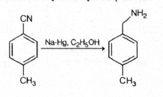
Step-by-step explanation:
The starting compound is an aromatic nitrile with a methyl
group on the ring.
The functional group of interest is:
\(\mathrm{-CN}\)
The reagent is:
\(\mathrm{Na-Hg,\ C_2H_5OH}\)
These are reducing conditions.
Nitriles under such reduction are converted into primary
amines:
\(\mathrm{R-CN \rightarrow R-CH_2NH_2}\)
So here the aromatic \(\mathrm{-CN}\) group changes into
\(\mathrm{-CH_2NH_2}\).
The methyl group already present on the benzene ring does
not change.
Hence the final product is \(p\)-methyl benzylamine,
matching option (d).
Concept used / theory behind it:
Nitriles are useful synthetic intermediates because they can
be converted into many different functional groups.
One standard transformation is reduction:
\(\mathrm{R-CN \rightarrow R-CH_2NH_2}\)
This gives a primary amine.
So nitrile reduction is a common route for preparing amines
with one extra carbon already built into the chain.
Why the correct option is right:
Option (d) alone correctly shows reduction of
\(\mathrm{-CN}\) to \(\mathrm{-CH_2NH_2}\) without changing
the para-methyl substituent.
Why other options are wrong:
(a) shows alcohol formation, which is not the product of
nitrile reduction here.
(b) removes the nitrile functionality incorrectly and gives
just dimethylbenzene type structure.
(c) shows amide formation, but the given reagent is
reducing, not hydrolysing.